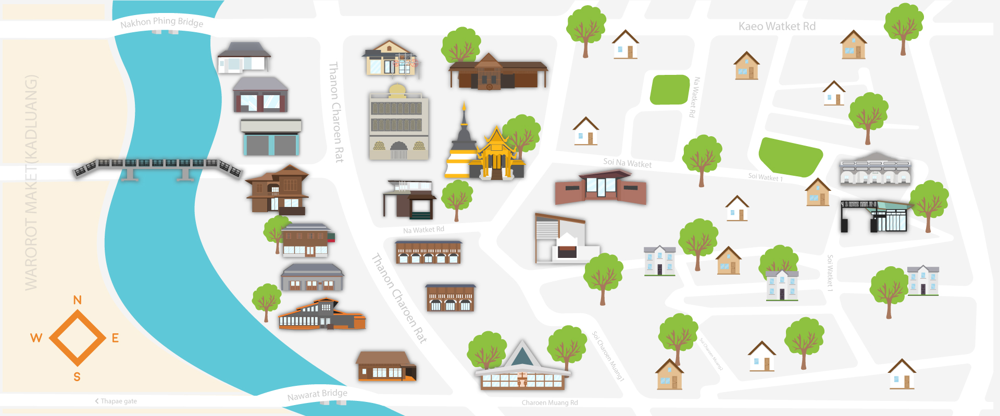

Home
History
The First Church of Chiang Mai
Wat Ket Karam
Wat Ket Karam Museum
Takwamosque
Gurudwara Sri Guru Singh Sabha
Healing Family Foundation
House 4 posts House 6 posts
Jansom Bridge
The Gallery
Reginagarden
The Meeting Room Art Cafe
Restaurant
Small Cafe
The Riverside
Wong Sakorn Acres
Baanrai Steak House
Cake Baan Piemsuk
Good View Bar & Restaurant
Khaokreab Pakmo Saku Saimu Lungjohn
Arts and crafts
169 Jareonradj
TorBoon
Vila Cini
Oriental Style
Watket Community History
English
ภาษาไทย
English
